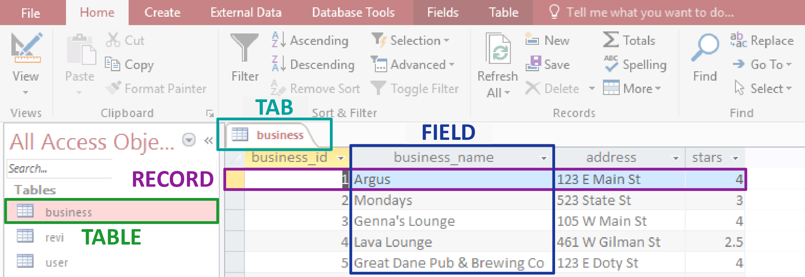
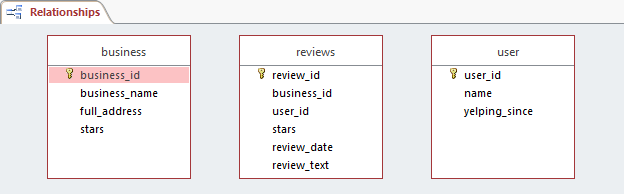

A database is an organized collection of information. Common examples of databases include mailing lists, telephone books, possession collections (baseball cards, international fridge magnets...you get the idea). In the business world, databases might be used to store information about customers, employees, product orders, and inventory. Microsoft Access is a database management software that provides tools for easily building and managing databases.
Why not just use Excel? Microsoft Excel is a spreadsheet software that essentially creates one long list of information. As a database management software, Access creates what are known as “relational databases” that allow the user to link multiple spreadsheets together through their fields. Well-made databases are organized to avoid duplicate or inconsistent information and are more efficient than spreadsheets when dealing with large amounts of data.
If you have a Windows computer, you can download the entire suite of Microsoft Office for free from DoIT through the Office 365 Web Portal.
Unlike the rest of the Microsoft Office suite, Access is only available on Windows.
To get Access on a Mac computer, you will need to run Windows on your Mac using a virtual machine program like Parallels (easier but can run more slowly), or set up your computer to dual-boot both MacOS and Windows (more complex but performs slightly better).
In this section, we'll examine some key concepts that underlie database development:
Tables: Where our data will be stored.
Primary/Foreign keys: The places where our tables connect to one another.
Relationships: How we will link our tables together.
It's very important to plan out your database before you jump in and start working! Since the contents of a database are highly interrelated, it's difficult to go back and make changes once you've started.
In this case, however, we have created a database for you. This database is an abridged collection of business statistics from yelp.com, and it contains information on businesses, Yelp reviews, and Yelp users in Madison, Wisconsin.
The first step of learning how a particular database functions is to look at its tables. In our abridged Yelp dataset, we will have three tables of information:
business: Data about the businesses in Madison that have been reviewed on Yelp.
user: Data about each Yelp user that has reviewed a business in Madison.
review: Data about every review that a user has made about a business.
Let's open our database and examine the tables.
Open yelp-database.accdb from your Class Files folder.
If a Security Warning is shown at the top of your interface, click Enable Content.
Open the business table by double-clicking on "business" in the Tables panel on the left side of the Access interface.
Every database consists of a collection of tables, which are defined by fields and populated by records.
Tables are conceptually similar to single spreadsheets in that they contains rows and columns of data.
Fields are the different categories of information that a table shows.
Records are units in a table that contain a distinct value for each field.
A table is one example of an Access object, which is why the tables in our database are listed under the Objects Panel. Any Access object can be opened, saved, renamed, and closed independently. When an object is open, it is shown in the Access interface as an Object Tab. You can right-click on any Object Tab to save, rename, or close it.
Open the other two tables in your database by double-clicking on their names in the Object Panel. With the exception of the ID fields, which we will explore later in this manual, you should be able to make a guess at what information all of the fields contain.
Before we go any further, we will save our entire Access database as a copy of itself. Many changes in Microsoft Access cannot be undone, and if a mistake is made, sometimes the only thing to do is revert to an earlier version of the database. By creating a copy of our .accdb file and saving it regularly, we will avoid lots of trouble in the long run.
Choose File > Save As > Access Database. Name your new file yelp-database-edits.accdb, because this is the file that we will be working on throughout today's class. Now yelp-database.accdb will remain untouched so that we can always go back to it if need be.
If the Security Warning pops up again, click on the Enable Content button again.
Open the review table by double-clicking its name in the Object Panel on the left.
On the left side of Access's Home tab, either click on the Design View icon or click View > Design View
A table's Design View shows us the table's fields as rows in a grid. Here we can set up how our fields will work.
Edit the fields according to these guidelines:
review_id: We will not change this field.
business_id: This field will relate to the business_id field in the business table, so it must have the same Data Type. Change the Data Type for business_id from "Short Text" to "Number."
user_id: This field will relate to the user_id field in the user table. It already has the same type, but we must also pay attention to the Field Properties for each field (located at the bottom of our screen). Click on the user_id field to select it, and in the Field Properties below, change Field Size to 22.
review_date: There is a special Field Type for date and time information. Using this data type will allow us to sort data chronologically. Change the Data Type for review_date from "Short Text" to "Date/Time".
stars: This field should also be a number, but it will not always be an integer. Also, no review can give a business greater than 5 stars or less than 1 star, so we will add a Validation Rule to make sure that no review exceeds these boundaries. We will then add Validation Text that will be shown if someone tries to add a review that does not satisfy the Rule.
First, change the Data Type for stars from "Short Text" to "Number."
In the Field Properties below, change the Field Size from "Long Integer" to "Single." This will allow non-integer ratings such as 4.5.
In the Field Properties, input the following expression for the Validation Rule:
>=1 And <=5
Finally, input the following for Validation Text (without quotes): "Number of stars must be between 1 and 5."
review_text: Leave this field as it is -- we have finished it for you!
Make sure your table's fields look like the example above, and double-check every change that you have made to the properties of each field. You will not be able to undo these changes once you have saved them!
Right-click on the tab for the review table (right above the first row of cells) and click Save.
A warning will pop up to notify us that we are in danger of losing information. Make sure that you have made a copy of your database, and then click Yes.
A second warning will pop up to ask if the existing data in our review table should be checked for accordance with the Validation Rule we have set. Click Yes.
Caution: if a third dialog box appears and says that the existing review data violates our Validation Rule, click No and make sure you have not made any errors in step 3!
In order to create a relationship between two tables, we need to link a specific field in one table to a related field in the other table. The field on which a table is connected to another table is called a key.
A primary key is a field that uniquely identifies each record in a table. In our business table, the primary key is business_id.
A foreign key is a field whose values correspond to the values of another table's primary key. Our review table has a foreign key of business_id that corresponds to the same field in our business table.
Let's create a primary key for each table in our database.
Navigate to the business table.
Make sure you are in Design View, with the fields of your table shown as rows -- if not, click the Design View button at the left of the Home tab.
The primary key for the business table will be business_id. Select business_id, then click on the Primary Key button in the Design tab. A small key icon should appear to the left of the business_id field.
In the user table, use the same method to set the primary key to user_id. In the review table, set the primary key to review_id.
Save your changes by right-clicking on the tab for each table and choosing Save.
When you are finished, close all open tables by right-clicking on the tab for any table and choosing Close All. Closing tables keeps our workspace tidy and allows Access to safely make changes to our database structure as we keep working.
Relationships between tables allow the tables to work together, avoiding duplication of data and allowing queries to access multiple tables at once. Tables within a database can be related to each other in three ways: one-to-one, one-to-many, and many-to-many.
| Type | Explanation | Example of use |
|---|---|---|
| One-to-one | Each record in either table relates to one and only one record in the opposite table. | Each UW student has one and only one health record, and each health record is related to one and only one student. |
| One-to-many | A record in the first table relates to zero, one, or multiple records in the second table, but each record in the second table is related to one and only one record in the first table. | A department can hold any number of professors, but each professor is listed under one and only one department. |
| Many-to-many | A record in either table can relate to zero, one, or multiple records in the opposite table. | A student can be enrolled in any number of classes, and a class can contain any number of students. |
Let's get ready to create some relationships in our database!
Navigate to Access's Database Tools tab and click on the Relationships button.
The Relationships layout will open, displyaing a blank space. This is where we will put our database's tables.
With Relationships open, click on the Show Table button in the Design tab. A Show Table dialog box will appear.
Select all three tables, click Add, then Close.
Three boxes that represent our three tables will now be shown on our Relationships interface. You can move these boxes around by clicking and dragging on their top bar. For now, just make sure that reviews is in between business and user.
Your interface should look something like this. Make sure that your tables' primary keys are the same as those below -- if not, you'll need to redefine them in your tables' Design View.
The Relationships interface allows us to create relationships between tables. Let's start by deciding what relationships we need to create:
Each review should be linked to the business it critiques, and each business should be linked to a list of its reviews (One-to-Many).
Each review should be linked to the user who authored it, and each user should be linked to a list of the reviews they have made (One-to-Many).
Each business should be linked to a list of users who have reviewed it, and each user should be linked to a list of businesses that they have reviewed (Many-to-Many).
Believe it or not, we only need to create two relationships to satisfy all three of the above connections. Let's begin!
Click on the business_id field within the business table and hold your mouse button. Drag your mouse to the business_id field in the reviews table and release the mouse button.
In the Edit Relationships dialog box that appears, check Enforce Referential Integrity and then click Create. A line will appear connecting the two fields that have just been related to one another.
Recall the types of relationships discussed earlier. This is an example of a One-to-Many relationship, as evidenced by the 1 and ∞ above. This is good, because we want every business to be related to some number of reviews, but a single review should not relate to more than one business.
Repeat steps 1 and 2, this time dragging the user_id field in the user table to the user_id field in the reviews table. This will also be a One-to-Many relationship, because one user can write many reviews but a single review can only have one author.
All we need to do now is create a Many-to-Many relationship between business and user. With a closer look, though, we can see that this relationship has already been created! Every business is linked to a list of reviews, which are each linked to a single user: thus, every business is also linked to a list of users who have reviewed it. Likewise, every user is linked to a list of reviews they have made, which are each tied to a business. This interaction between two One-to-Many relationships is actually the only way to create a Many-to-Many relationship in Access.
Since we are finished editing our relationships, save and close the Relationships Layout object.
Now that we have related our tables to one another, what can we do? Relationships allow for the creation of multi-table queries, reports, and forms, but we won't get to those topics until Access 2. For now, we will use the Referential Integrity that we have just instated to make sure nothing goes wrong when we add 805 new records to the review table.
You can add data to a table simply by adding a new row underneath the bottom-most record in Datasheet View, but what if there is an entire spreadsheet of records to add? In this exercise, we will add 805 records to the review table with just a few clicks.
Navigate to the External Data tab at the top of your screen. In the Import & Link section, click on Excel.
In the "Get External Data" window that opens, click the Browse button and select 2014-reviews.xlsx in the class files. Click Open.
Select "Append a copy of the records to the table:" then choose "review" from the dropdown menu.
Click OK. If you are prompted to close the review table, click Yes.
An "Import Spreadsheet Wizard" will appear. Click Finish, then Close.
Open the review table. Our database now contains review records from 2014!
You can also export a table from an Access database to an Excel spreadsheet. Spreadsheets are much smaller than databases and they are easier to use, so exporting tables from Access is useful for sending information to other people.
Select any table in your database and open it.
In the External Data tab, click the Excel button in the Export section on the right.
In the Export window that opens, click the Browse button and choose a place for your file.
Click the checkboxes next to "Export data with formatting and layout" and "Open the destination file after the export operation is complete."
Click OK. Your exported spreadsheet should open automatically in Excel!
Now that we have a full review table with lots of data in it, let’s take a look at the basic sorting, filtering, and formatting options available in Access.
Sorting tables is useful for organizing data. Let's organize our businesses alphabetically.
Open the business table in Datasheet View.
Click on the dropdown arrow to the right of the field label for the business_name field.
Choose "Sort A to Z." The business data will be rearranged alphabetically by business name.
We can also use sorting to look for trends without getting into complicated queries or forms. Let's organize the business table by its star field in order to make conclusions about which businesses have the best reception on Yelp.
Click on the dropdown arrow for the stars field and choose "Sort Largest to Smallest."
Now the records are arranged by the business's star rating, but within a single star rating (for example, in the group of businesses with a rating of 4), the businesses are still arranged alphabetically: this is a left-over effect from our first Sort.
To remove all Sort effects, click on the "Remove Sort" button in the Home tab in the Sort & Filter section.
We can also filter tables to hide all records that do not fulfill particular criteria. Let's look at all of the businesses with 3 or 3.5 stars.
In the dropdown menu for the stars field, uncheck "Select All."
In the same dropdown menu, check "3" and check "3.5".
Click OK. The data is now filtered, which means that the records with less than 3 or more than 3.5 stars are hidden from view.
To clear the filter, click on the dropdown arrow for the stars field and click "Clear filter from stars."
On the Home tab, under the Text Formatting section, you will find the standard Office text formatting options like font, bold, and italicize, plus a few options specific to Access.
Just like Excel, you can resize columns to fit your data. Hovering the mouse point over the boundaries between columns will change it to a double-headed arrow. Click and drag to resize, or double click to automatically snap the column width to that of the longest data value. You can also hide columns that you don’t want to see.
Congratulations on finishing Access 1! You should now have a good understanding of Access basics and the structure of a database. During the class, we touched on a lot of key concepts integral to using Access, and began to look at tools that help sort through the data. If you are interested in learning more, check out lynda.com as well as the Access 2 class that STS offers.
We can improve the design of a database by using concepts of normalization. Database normalization is the process by which a database is designed in accordance with accepted standards. These standards help guide the design process and will help keep your database operating as efficiently as possible.
Identify and separate repeated field values
If a particular field exists in more than one table, move that field into another table and link it to the original tables via Primary/Foreign Keys.
Separate fields that require multiple values
As we learned when discussing Many-to-Many relationships, a single field within a record can only contain one value. Fields that might require multiple values need to be moved to separate tables and linked via Primary/Foreign Keys.
Divide information into the smallest "chunks" possible
Searching and sorting is difficult if there is a large amount of data in a given field; break up fields in to small "chunks" of information whenever possible. For example, addresses are difficult to search if an entire address is contained in one field. Instead, break an address into multiple fields: Street Address, City, State, and Zip Code. (In the class file, we didn't even include the latter three fields because they would have all been largely the same!)
In a one-to-many relationship such as the ones in our Yelp databse, we can think of the records in the "many" side as references to records in the "one" side.
Let's say that there are some businesses in our business table that are no longer open. If we wanted to delete a business from our database, we could try to remove the relevant record from the business table. However, if this business has reviews in the review table associated with it, these review records would be orphaned, here meaning that they now reference an empty spot in the business table. Put another way, the review records may still contain a business_id field, but that business_id will no longer be valid because the business it represents does not exist.
Using "Enforce Referential Integrity" when you create a relationship will turn on a safeguard within Access that will not allow you to ever change or remove the target of a reference, thus making the above hypothetical situation impossible.
Sometimes, however, there is a perfectly valid reason to change or delete a target record, such as the situation described above where a business in our business table has permanently closed. In this situation, Access can help us out by automatically updating ("Cascade Update Related Fields") or deleting ("Cascade Delete Related Fields") all of the affected records at once.
| Option | Description |
|---|---|
| Enforce Referential Integrity | Access will not allow the user to change or delete any record that is referenced by other fields in the database -- unless CURF or CDRF, respectively, is checked. |
| Cascade Update Related Fields | Changing a field in a target record will automatically update all of the record values that reference it. |
| Cascade Delete Related Fields | Deleting a field in a target record will automatically delete all of the records that reference it. |